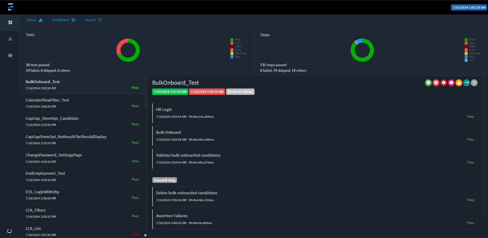

Generating Reports for Tests
We use the ExtentReports library to generate reports for our tests in the Reports directory. The reports are generated in HTML format and can be viewed in any browser.
The ExtentReports library provides a simple API to create and manage reports. It also provides a way to log test steps and attach screenshots to the reports.
Adding ExtentReports to the Project
To add the ExtentReports NuGet package to the project, run the following command in the terminal:
Note: This part is already done and you don't have to do it again.
Creating a Report
To create a report, we need to create an instance of the ExtentReports class. We also need to create an instance of the ExtentTest class for each test case.
Here is an example of how to create a report:
using AventStack.ExtentReports;
using AventStack.ExtentReports.Reporter;
namespace ExtentReportsDemo
{
class Program
{
static void Main(string[] args)
{
// Create an instance of ExtentReports
var extent = new ExtentReports();
// Create an instance of ExtentHtmlReporter and attach it to the ExtentReports
var htmlReporter = new ExtentHtmlReporter("Reports\\TestReport.html");
extent.AttachReporter(htmlReporter);
// Create a test
var test = extent.CreateTest("TestName");
// Log test steps
test.Log(Status.Pass, "Step 1");
test.Log(Status.Pass, "Step 2");
// End the test
extent.Flush();
}
}
}
Note: This is just an example of how to use the ExtentReports library, all of this is already configured in ReportsGenerationClass and TestExecutionHelper
Using pre-built classes to Generate Reports
We have created a class called ReportsGenerationClass that generates reports for the tests. This class uses the ExtentReports library to create and manage reports.
The ReportsGenerationClass class is inherited by the TestExecutionHelper which is in-turn inherited by all the tests.
Using ExecuteStep method
The ExecuteStep method is used to log test steps in the report. (Use the ExecuteStep method which uses dictionary as the other overload method shall be removed in a future version.)
Let's consider our current step in the test is to login using the Login method. We can log this step in the report using the ExecuteStep method as shown below:
Now, what the above method invocation would do is log the step "Login" in the report with the description "Login to the application" when the entire Login() method has finished executing. So, it'll essentially only log two steps one at the beginning of the method invocation and one at the end of its execution. To log any steps in between, we're going to pass the current nodeName inside our test step method and use the LogSubstep method to log the substeps.
Using LogSubstep method
The LogSubstep method is used to log substeps in the report. This method is used to log the steps that are part of a test step.
Using the above example, let's consider that the Login method has the following steps:
- Enter username
- Enter password
- Click on the login button
- Verify the login
We can log these steps in the report using the LogSubstep method and also modify the Test Method as shown below:
public void Login(string username, string password, string nodeName)
{
driver.FindElement(By.Id("username")).SendKeys(username);
LogSubstep(nodeName: "Enter username", stepDetails: $"Entered username - {username}", parentNodeName:nodeName);
driver.FindElement(By.Id("password")).SendKeys(password);
LogSubstep(nodeName: "Enter password", stepDetails: $"Entered password - {password}", parentNodeName:nodeName);
driver.FindElement(By.Id("login")).Click();
LogSubstep(nodeName: "Click on the login button", stepDetails: "Clicked on the login button", parentNodeName:nodeName);
Assert.IsTrue(driver.FindElement(By.Id("welcome")).Text.Contains("Welcome"));
LogSubstep(nodeName: "Verify the login", stepDetails: "Verified the login", parentNodeName:nodeName);
}
So, the above method invocation would log the steps "Enter username", "Enter password", "Click on the login button", and "Verify the login" in the report with the description provided when the respective step is executed.
Viewing the Report
The reports are generated in the Reports directory. To view the report, open the Reports\Report dd_MM_yyyy folder and open the ExtentReport - dd_MMM_yy - hh_mm.html file in a browser.
The report contains the following information:
- Test name
- Test status
- Test steps
- Test execution date and time
Good Practices
- Log all test steps: Log all the test steps in the report using the
ExecuteStepandLogSubstepmethods. - Use meaningful step descriptions: Use meaningful step descriptions to make the report more informative.
- Use the
ExecuteStepmethod: Use theExecuteStepmethod to log the test steps in the report. - Use the
LogSubstepmethod: Use theLogSubstepmethod to log the substeps in the report. - Use the
NodeDetailsclass: Use theNodeDetailsclass to store the step details. - Use the
Dictionaryclass: Use theDictionaryclass to store the test steps. - Use typed variables: Use typed variables for step keys to ensure compile-time safety.
Report Example
Here is an example of a report generated by the ExtentReports library:

- The top-left section shows the status of all tests in the current report.
- The top-right section shows the status of the test steps in all tests combined.
- The bottom section shows the details of each test, including the test name, status, and test steps.
- The test steps are color-coded based on their status (Pass, Fail, Fatal, Skip, Warning etc.,).
- The test steps can be expanded to view the details of each step.